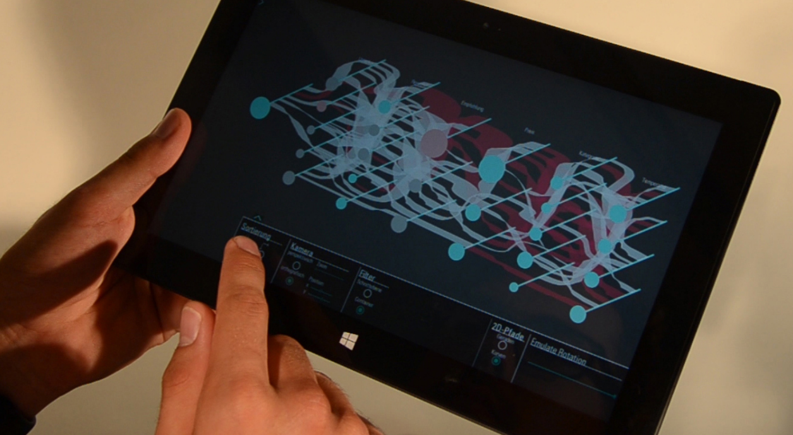

Additional On-Demand Dimension for Data Visualization

Venue. EuroVis (2017) Short Paper
Authors. Natalie Hube, Mathias Müller, Rainer Groh
Abstract. In this paper, we present a concept to interactively extend an 2d visualization by an additional on-demand dimension. We use categorical data in a multidimensional information space applied in a travel search scenario. Parallel sets are used as the basis for the visualization concept, since this is particularly suitable for the visualization of categorical data. The on-demand dimension expands the vertical axis of a parallel coordinate graph into depth axis and is intended to increase comparability of path variables with respect to the number of elements belonging to the respective parameter axis instead of direct comparability of individual paths and keep relations between the parallel sets. The presented implementation suits as foundation for further studies about the usefulness of a dynamic, on demand extension a of 2d visualizations into spatial visualizations. Furthermore, we present some additional approaches about the usage of the increased visualization space.